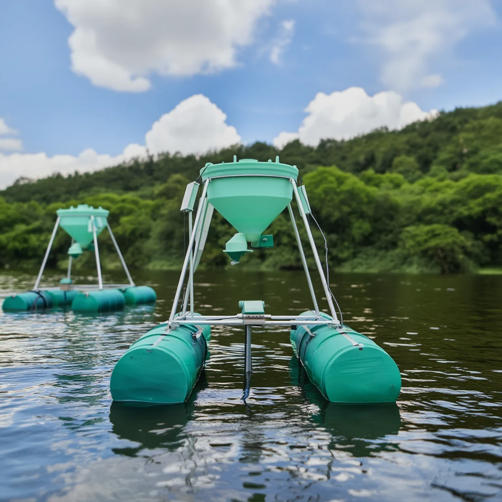
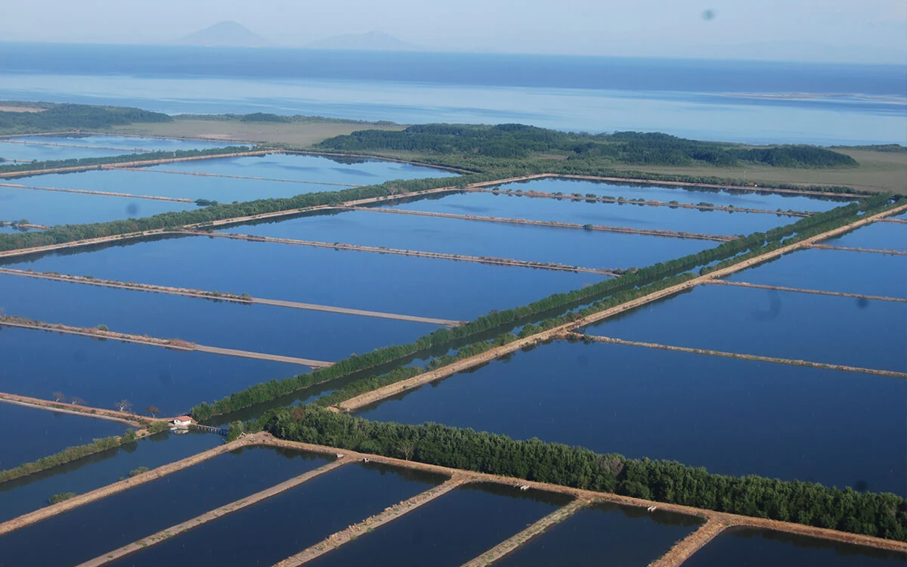
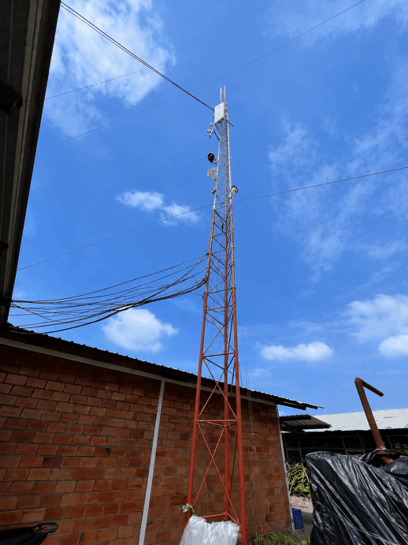
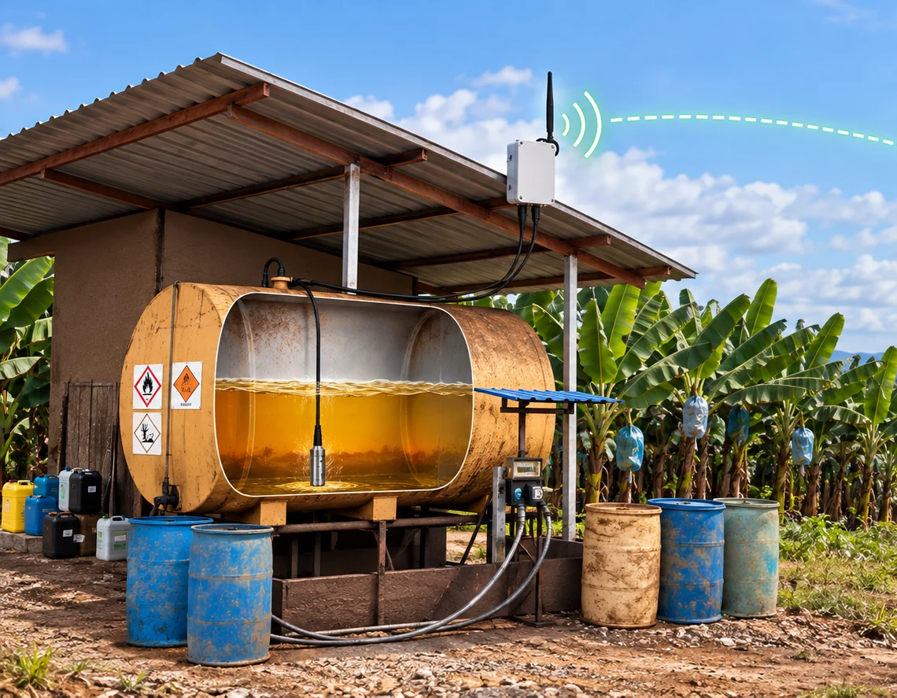
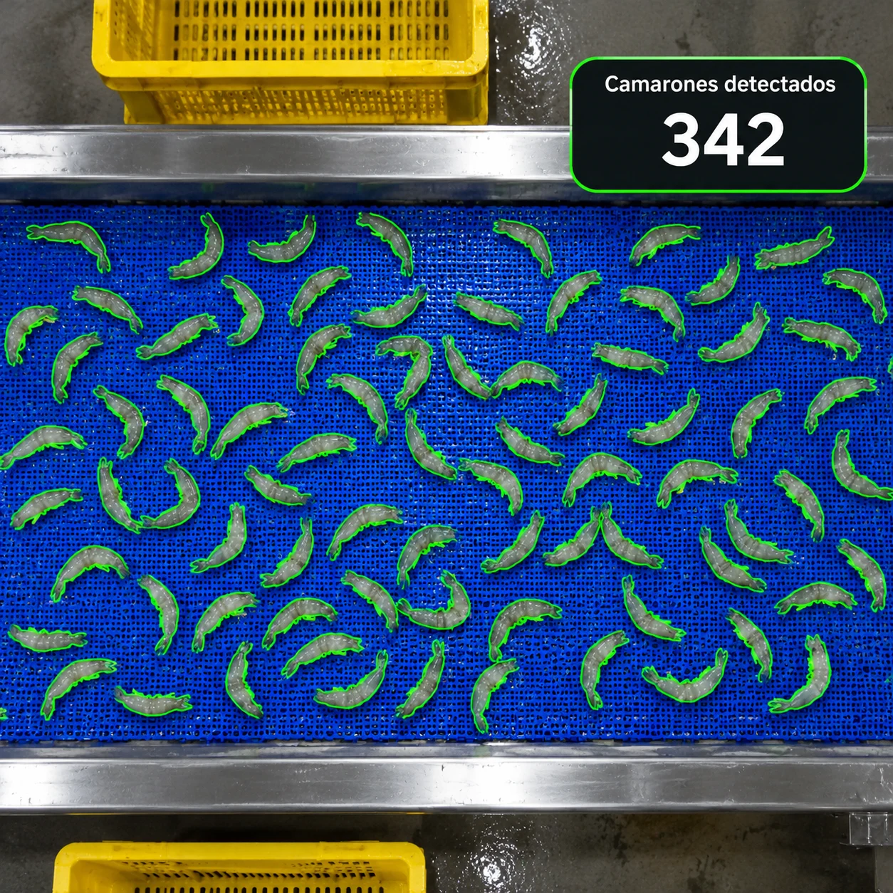
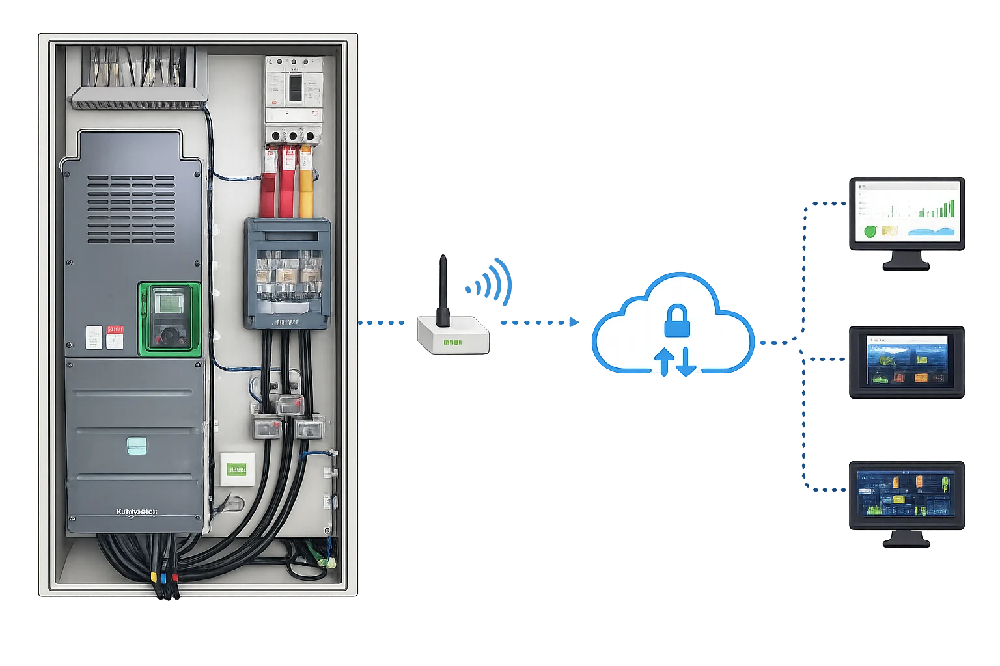
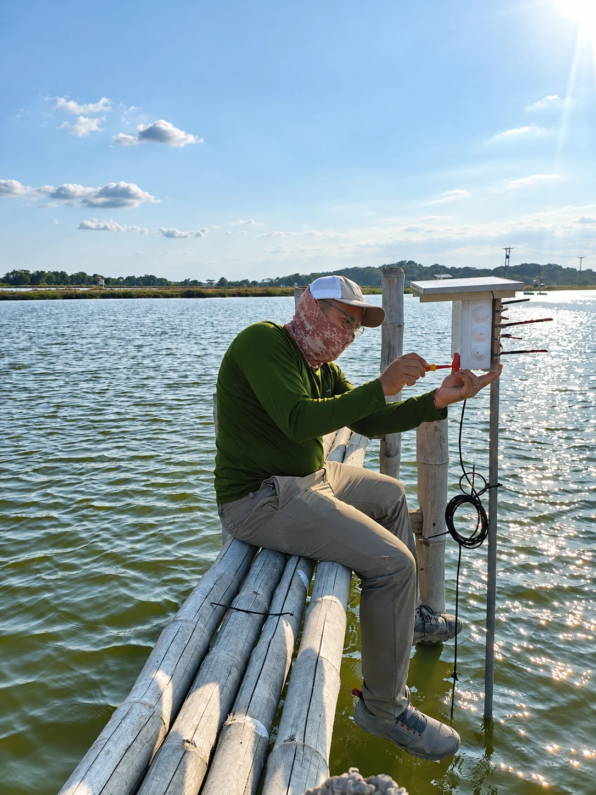
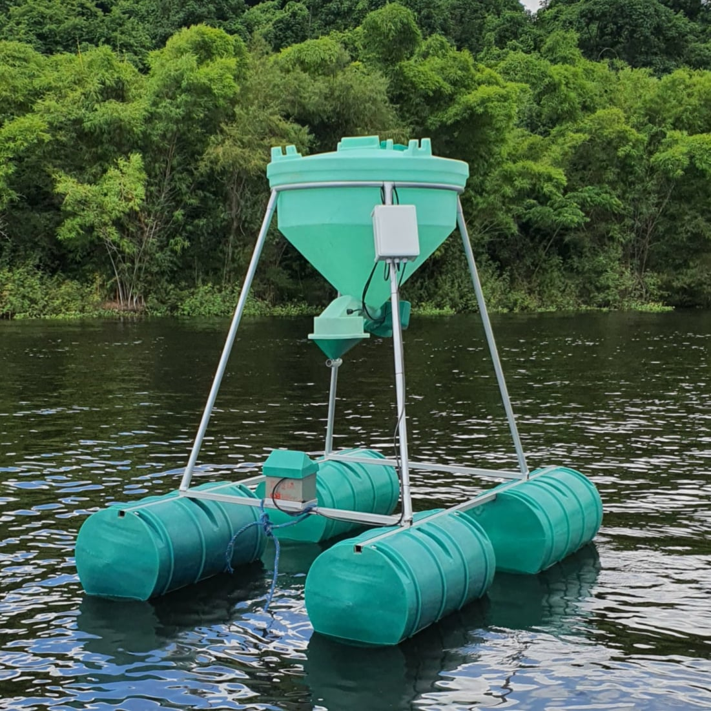
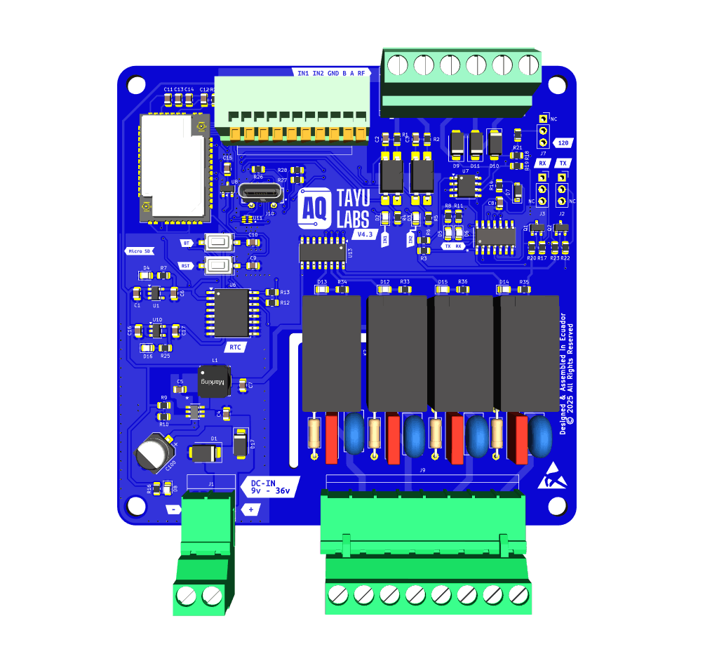

Automatización
Alimentadores automáticos
Programa y supervisa la alimentación. Integra dosificación y registros de operación con tu plataforma.
Conocer más ↗De la siembra a la cosecha. Controla equipos a larga distancia, mide variables críticas y visualiza tu operación desde Amelia Cloud.

TAYULABS · IoT y automatizaciónHardware, software e inteligencia artificial diseñados para cada necesidad de la camaronera y empacadora.

Programa y supervisa la alimentación. Integra dosificación y registros de operación con tu plataforma.
Conocer más ↗
Enciende, apaga y supervisa aireadores en múltiples piscinas con comunicación de largo alcance.

Monitorea tanques de combustible en generadores y sistemas de respaldo con lecturas y alertas.

Soluciones de visión artificial para conteo y estimación de peso según proceso, cámara y calibración.

Registra consumo eléctrico y datos de aireadores, bombas y alimentadores para análisis operativo.

Integra sensores de oxígeno disuelto, temperatura y otras variables disponibles según instrumentación.
Desde aireadores hasta medidores de energía, diseñamos la integración adecuada para equipos existentes o nuevos. Definimos conectividad, instalación y alertas para tu operación.
Reemplaza o amplía esta galería con fotografías reales y capturas de los proyectos de TAYULABS.


Sí. Mediante dispositivos IoT y comunicación LoRaWAN podemos automatizar el encendido, apagado y supervisión de equipos distribuidos en diferentes piscinas. El alcance depende de las condiciones del terreno y de la infraestructura instalada.
No. La comunicación LoRaWAN permite conectar dispositivos de campo con un gateway central, sin necesidad de instalar Wi-Fi en cada piscina. Para acceder remotamente a Amelia Cloud, el sistema central requiere conectividad a internet.
Sí. Evaluamos la compatibilidad de tus sensores, medidores y sistemas de control para determinar cómo integrarlos con nuestras soluciones IoT. Trabajamos con tecnologías y protocolos industriales como RS485 y Modbus.
Desarrollamos sistemas de visión artificial que permiten detectar y contar camarones en bandas transportadoras. También trabajamos en modelos para estimar su peso mediante imágenes y procesos de calibración. Estas funcionalidades se encuentran en desarrollo y requieren validación según las condiciones de cada empacadora.